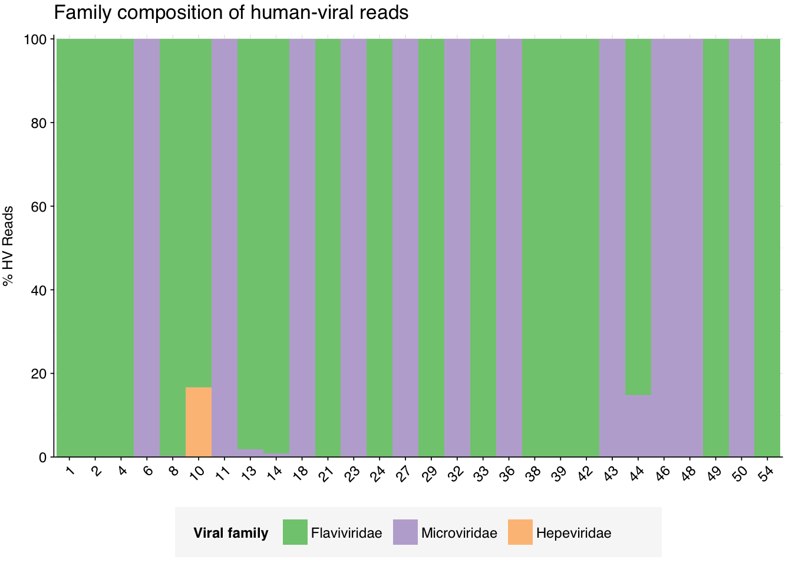

As a part of my time here, I’m exploring blood-based surveillance for novel viral pathogen detection. We’ve decided to make three blog posts. The first blog post will cover the physical and biological characteristics of blood, the second blog post will cover the blood sampling strategies, and the last blog post will look at the metagenomic profile of blood (which is what we’re doing here, and will do for the next few posts).
This is the first of many studies that I’ll be analyzing. however I don’t expect all of them to be used in the last blog post. In this post, I analyze Cebria-Mendoza 2021, a dataset with 60 samples where each sample is a pool of 8-13 unique healthy donors, with a total of ~600 donors from Spain.
The raw data
About
This dataset is composed of 60 samples which come from plasma pools of anywhere from 8-13 people from Spain. In total, there were 567 healthy individuals that have contributed to these pools. The demographic information that I have for each pool is the gender and age of the donor as well as the number that has contributed to each pool. For each pooled sample, they performed a combined DNA and RNA library preparation, resulting in a single sequencing output that captures both nucleic acid types. This approach provides comprehensive genetic information but precludes separate analysis of DNA and RNA from individual samples.
Sample + library preparation
A total of 587 plasma samples from healthy donors were collected from the Centro de Transfusión de la Comunidad Valenciana (Valencia, Spain) from 15 September 2018 to 30 March 2019 and stored at −80 °C until use.
Each of the 60 pools (SP1-SP60) analyzed in this study was obtained by mixing 1 mL of plasma from a variable number of donors (between 8- and 13-mL total). To assess viral recovery, each pool was spiked with 103 PFU of ϕX174 and 104 PFU of vesicular stomatitis virus (VSV). The purification protocol has been previously described in detail [18]. Briefly, plasma pools were processed with 1.0 µM filters to remove cells and other non-viral particles and the filtered fractions were subject to high-speed centrifugation (87,000 g, 2 h, 4 °C), washed with PBS 1X (87,000 g, 1 h, 4 °C), and resuspended in 245 µL 1X digestion buffer (Turbo DNA Free kit, Ambion, Carlsbad, CA, USA). Then, 5 µL of Turbo DNase, 2 µL of Benzonase (Sigma, Darmstadt, Germany) and 2 µL of micrococcal nuclease (NEB) were added to the sample to remove unprotected nucleic acids. After incubation (1 h, 37 °C), 20 µL of stop reagent was added, following the manufacturer’s instructions. Then, 240 µL supernatant was transferred to a new tube and split into two fractions: 200 µL fraction was used for RNA extraction using TRIzol LS reagent (Invitrogen, Carlsbad, USA), followed by purification with the QIAamp Viral RNA Mini kit (Qiagen, Hilden, Germany) and amplification with the QuantiTect Whole Transcriptome kit (Qiagen), and 40 µL fraction was used for DNA extraction with the QIAamp Viral RNA Mini kit and amplification with the TruePrime WGA kit (Sygnis, Heidelberg, Germany).
For each pool, DNA and RNA amplification products were mixed in equimolar concentration before library preparation, which was carried out using Nextera XT DNA library preparation kit with 15 amplification cycles (Illumina, San Diego, USA), and subject to pair-end sequencing in a NextSeq device.
More details can be found in their original paper which outlined this protocol.
Quality control
In total, these 60 samples contained 230M read pairs. The samples had 2.3M - 4.8M (mean 3.8M) read pairs each.
The number of read pairs and total base pairs looks good, however the duplication rate is quite high (this can be attributed to their sample preparation).
Code
# Prepare databasic_stats_raw_metrics<-basic_stats_raw%>%select(library,pool_size, `# Read pairs` =n_read_pairs, `Total base pairs\n(approx)` =n_bases_approx, `% Duplicates\n(FASTQC)` =percent_duplicates)%>%pivot_longer(-(library:pool_size), names_to ="metric", values_to ="value")%>%mutate(metric =fct_inorder(metric))# Set up plot templatesg_basic<-ggplot(basic_stats_raw_metrics, aes(x =library, y =value, fill =pool_size))+geom_col(position ="dodge")+scale_x_discrete()+scale_y_continuous(expand =c(0, 0))+expand_limits(y =c(0, 100))+scale_fill_brewer(palette ="Accent")+facet_grid(metric~., scales ="free", space ="free_x", switch ="y")+theme_kit+theme( axis.title.y =element_blank(), strip.text.y =element_text(face ="plain"))g_basic
Adapter content is low (the upper limit on the plot is 1%). Read quality seems good both over all the positions as well as over the number of sequences.
Code
# Set up plotting templatesg_qual_raw<-ggplot(mapping=aes(linetype=read_pair, group=interaction(sample,read_pair)))+scale_linetype_discrete(name ="Read Pair")+guides(color=guide_legend(nrow=2,byrow=TRUE), linetype =guide_legend(nrow=2,byrow=TRUE))+theme_base# Visualize adaptersg_adapters_raw<-g_qual_raw+geom_line(aes(x=position, y=pc_adapters), data=adapter_stats_raw)+scale_y_continuous(name="% Adapters", limits=c(0,1), expand=c(0,0))+scale_x_continuous(name="Position", limits=c(0,NA), breaks=seq(0,500,20), expand=c(0,0))+facet_grid(.~adapter)g_adapters_raw
The average fraction of reads at each stage in the preprocessing pipeline is shown in the following table. On average, cleaning & deduplication removed about 57% of total read pairs, primarily during duplication which makes sense given that the raw metrics show that the samples are quite high in duplication. Ribodepletion removed about 6-8% during each round.
Code
# TODO: Group by pool size as well# Count read lossesn_reads_rel<-basic_stats%>%select(sample, pool_size, stage, percent_duplicates, n_read_pairs)%>%group_by(sample, pool_size)%>%arrange(sample, stage)%>%mutate(p_reads_retained =n_read_pairs/lag(n_read_pairs), p_reads_lost =1-p_reads_retained, p_reads_retained_abs =n_read_pairs/n_read_pairs[1], p_reads_lost_abs =1-p_reads_retained_abs, p_reads_lost_abs_marginal =p_reads_lost_abs-lag(p_reads_lost_abs))n_reads_rel_display<-n_reads_rel%>%rename(Stage=stage)%>%group_by(Stage)%>%summarize(`% Total Reads Lost (Cumulative)` =paste0(round(min(p_reads_lost_abs*100),1), "-", round(max(p_reads_lost_abs*100),1), " (mean ", round(mean(p_reads_lost_abs*100),1), ")"), `% Total Reads Lost (Marginal)` =paste0(round(min(p_reads_lost_abs_marginal*100),1), "-", round(max(p_reads_lost_abs_marginal*100),1), " (mean ", round(mean(p_reads_lost_abs_marginal*100),1), ")"), .groups="drop")%>%filter(Stage!="raw_concat")%>%mutate(Stage =Stage%>%as.numeric%>%factor(labels=c("Trimming & filtering", "Deduplication", "Initial ribodepletion", "Secondary ribodepletion")))n_reads_rel_display
Adapter content staays low. Read quality stays pretty similar over the positions, but improves over the number of sequences (predominantly from cleaning) throughout the pipeline.
Some samples had anywhere as low as 10% all the way up to 60% ribosomal reads.
Code
# Calculate reads lost during ribodepletion (approximation for % ribosomal reads)reads_ribo<-n_reads_rel%>%filter(stage%in%c("dedup", "ribo_secondary"))%>%group_by(sample)%>%summarize(p_reads_ribo=1-n_read_pairs[2]/n_read_pairs[1], .groups ="drop")%>%inner_join(libraries, by ='sample')reads_ribo_summ<-reads_ribo%>%group_by(sample)%>%summarize(min=min(p_reads_ribo), max=max(p_reads_ribo), mean=mean(p_reads_ribo), .groups ="drop")%>%inner_join(libraries, by ='sample')g_reads_ribo<-ggplot(reads_ribo, aes(x=library, y=p_reads_ribo))+geom_point()+scale_y_continuous(name="Approx % ribosomal reads", limits=c(0,1), breaks=seq(0,1,0.2), expand=c(0,0), labels =function(y)y*100)+theme_kitg_reads_ribo
Taxonomic composition
High-level composition
To assess the high-level composition of the reads, we ran them through Kraken2 and summarized the results with Bracken.
Code
# Prepare plotting templatesg_comp_base<-ggplot(mapping=aes(x=library, y=p_reads, fill=classification))+scale_x_discrete(name="Plasma pool")+theme_kit+theme(plot.title =element_text(hjust=0, face="plain", size=rel(1.5)))scale_y_pc_reads<-purrr::partial(scale_y_continuous, name ="% Reads", expand =c(0,0), labels =function(y)y*100)geom_comp<-purrr::partial(geom_col, position ="stack", width =1)# Plot overall compositiong_comp<-g_comp_base+geom_comp(data =comp)+scale_y_pc_reads(limits =c(0,1.01), breaks =seq(0,1,0.2))+scale_fill_brewer(palette ="Set1", name ="Classification")+ggtitle("Read composition (all reads, all groups)")g_comp
Code
# Repeat for classified reads onlypalette_assigned<-brewer.pal(9, "Set1")[5:9]g_comp_assigned<-g_comp_base+geom_comp(data =comp_assigned)+scale_y_pc_reads(limits =c(0,1.01), breaks =seq(0,1,0.2))+scale_fill_manual(values=palette_assigned, name ="Classification")+ggtitle("Read composition (assigned reads, all groups)")g_comp_assigned
Code
# Plot composition of minor componentspalette_minor<-brewer.pal(9, "Set1")[6:9]g_comp_minor<-g_comp_base+geom_comp(data=comp_minor)+scale_y_pc_reads()+scale_fill_manual(values=palette_minor, name ="Classification")+ggtitle("Read composition (all reads, minor groups)")g_comp_minor
Code
g_comp_assigned_minor<-g_comp_base+geom_comp(data=comp_assigned_minor)+scale_y_pc_reads()+scale_fill_manual(values=palette_minor, name ="Classification")+ggtitle("Read composition (assigned reads, minor groups)")g_comp_assigned_minor
Total viral content
Total viral fraction average \(1.81 \times 10^{-2}\) across samples. As a fraction of assigned (rather than total) reads, this jumped to \(1.60 \times {-1}\):
The two dominant viruses we see are Anellovirdae and Rhabdovirdae (spike-in). Followed by these two viral families is Flavivirdae, and lastly, also by a much smaller percent, Microviridae (spike-in). The threshold for the label “other” are the set of families that make up less than 1% composition in all samples.
Code
# Get viral taxonomyviral_taxa_path<-file.path(data_dir, "total-virus-db.tsv.gz")viral_taxa<-read_tsv(viral_taxa_path, show_col_types =FALSE)# Get Kraken reportsreports_path<-file.path(tax_final_dir, "kraken_reports.tsv.gz")reports<-read_tsv(reports_path, show_col_types =FALSE)%>%inner_join(libraries, by="sample")%>%arrange(sample)# Filter to viral taxakraken_reports_viral<-filter(reports, taxid%in%viral_taxa$taxid)%>%group_by(sample)%>%mutate(p_reads_viral =n_reads_clade/n_reads_clade[1])kraken_reports_viral_cleaned<-kraken_reports_viral%>%select(-pc_reads_total, -n_reads_direct, -contains("minimizers"))%>%select(name, taxid, p_reads_viral, n_reads_clade, everything())%>%ungroupviral_classes<-kraken_reports_viral_cleaned%>%filter(rank=="C")viral_families<-kraken_reports_viral_cleaned%>%filter(rank=="F")
I calculated the relative abundance of human-infecting viruses in two ways:
First, as the total number of deduplicated human-virus reads in each sample, divided by the number of raw reads (“All reads”).
Second, as a fraction of preprocessed (cleaned, deduplicated, computationally ribodepleted) reads (“Preprocessed reads”).
[Analyze]
Code
# Get raw read countsread_counts_raw<-filter(basic_stats_raw)%>%select(sample, n_reads_raw =n_read_pairs)read_counts_preproc<-basic_stats%>%filter(stage=="ribo_initial")%>%select(sample, n_reads_preproc =n_read_pairs)# Get HV read countsread_counts_hv<-mrg_hv%>%filter(hv_status)%>%group_by(sample)%>%count(name="n_reads_hv")read_counts<-read_counts_raw%>%left_join(read_counts_hv, by=c("sample"))%>%mutate(n_reads_hv =replace_na(n_reads_hv, 0))%>%left_join(read_counts_preproc, by=c("sample"))%>%inner_join(libraries, by=c("sample"))%>%select(sample, n_reads_raw, n_reads_preproc, n_reads_hv)%>%mutate(n_samples =1, p_reads_total =n_reads_hv/n_reads_raw, p_reads_preproc =n_reads_hv/n_reads_preproc)read_counts_long<-read_counts%>%pivot_longer(starts_with("p_reads"), names_to="read_group", values_to="p_reads")%>%mutate(read_group =ifelse(read_group=="p_reads_total", "All reads", "Preprocessed reads"))# Combine for displayread_counts_agg<-read_counts%>%mutate(p_reads_total =n_reads_hv/n_reads_raw, p_reads_preproc =n_reads_hv/n_reads_preproc)%>%inner_join(libraries, by=c("sample"))read_counts_agg_long<-read_counts_agg%>%pivot_longer(starts_with("p_reads"), names_to="read_group", values_to="p_reads")%>%mutate(read_group =ifelse(read_group=="p_reads_total", "All reads", "Preprocessed reads"))# Visualizeg_read_counts<-ggplot(read_counts_agg_long, aes(x=library, y=p_reads))+geom_point()+scale_y_log10(name ="Unique human-viral read fraction")+facet_grid(.~read_group, scales ="free")+theme_kitg_read_counts
Overall taxonomy and composition
Composition of HV reads was not greatly changed from when looking at all viral reads. The two dominant viruses we see are Anellovirdae and Rhabdovirdae. Followed by these two viral families is Flavivirdae, and lastly, also by a much smaller percent, Microviridae. The threshold for the label “other” are the set of families that make up less than 5% composition in all samples.
Code
threshold_major_family<-0.05# Count reads for each human-viral familyhv_family_counts<-hv_reads_family%>%group_by(sample, name, taxid)%>%count(name ="n_reads_hv")%>%group_by(sample)%>%mutate(p_reads_hv =n_reads_hv/sum(n_reads_hv))# Identify high-ranking families and group othershv_family_major_tab<-hv_family_counts%>%group_by(name)%>%filter(p_reads_hv==max(p_reads_hv))%>%filter(row_number()==1)%>%arrange(desc(p_reads_hv))%>%filter(p_reads_hv>threshold_major_family)hv_family_counts_major<-hv_family_counts%>%mutate(name_display =ifelse(name%in%hv_family_major_tab$name, name, "Other"))%>%group_by(sample, name_display)%>%summarize(n_reads_hv =sum(n_reads_hv), p_reads_hv =sum(p_reads_hv), .groups="drop")%>%mutate(name_display =factor(name_display, levels =c(hv_family_major_tab$name, "Other")))hv_family_counts_display<-hv_family_counts_major%>%rename(p_reads =p_reads_hv, classification =name_display)%>%inner_join(libraries, by ='sample')# Plotg_hv_family<-g_comp_base+geom_col(data=hv_family_counts_display, position ="stack", width=1)+scale_y_continuous(name="% HV Reads", limits=c(0,1.01), breaks =seq(0,1,0.2), expand=c(0,0), labels =function(y)y*100)+scale_fill_brewer(palette ='Accent', name ="Viral family")+labs(title="Family composition of human-viral reads")+guides(fill=guide_legend(ncol=4))+theme(plot.title =element_text(size=rel(1.4), hjust=0, face="plain"))g_hv_family
Code
# Get most prominent families for texthv_family_collate<-hv_family_counts%>%group_by(name, taxid)%>%summarize(n_reads_tot =sum(n_reads_hv), p_reads_max =max(p_reads_hv), .groups="drop")%>%arrange(desc(n_reads_tot))#hv_family_collate
Code
threshold_major_family<-0.05# Count reads for each human-viral familyhv_family_counts<-hv_reads_family%>%filter(!(name%in%c("Anelloviridae", "Rhabdoviridae")))%>%group_by(sample, name, taxid)%>%count(name ="n_reads_hv")%>%group_by(sample)%>%mutate(p_reads_hv =n_reads_hv/sum(n_reads_hv))# Identify high-ranking families and group othershv_family_major_tab<-hv_family_counts%>%group_by(name)%>%filter(p_reads_hv==max(p_reads_hv))%>%filter(row_number()==1)%>%arrange(desc(p_reads_hv))%>%filter(p_reads_hv>threshold_major_family)hv_family_counts_major<-hv_family_counts%>%mutate(name_display =ifelse(name%in%hv_family_major_tab$name, name, "Other"))%>%group_by(sample, name_display)%>%summarize(n_reads_hv =sum(n_reads_hv), p_reads_hv =sum(p_reads_hv), .groups="drop")%>%mutate(name_display =factor(name_display, levels =c(hv_family_major_tab$name, "Other")))hv_family_counts_display<-hv_family_counts_major%>%rename(p_reads =p_reads_hv, classification =name_display)%>%inner_join(libraries, by ='sample')# Plotg_hv_family<-g_comp_base+geom_col(data=hv_family_counts_display, position ="stack", width=1)+scale_y_continuous(name="% HV Reads", limits=c(0,1.01), breaks =seq(0,1,0.2), expand=c(0,0), labels =function(y)y*100)+scale_fill_brewer(palette ='Accent', name ="Viral family")+labs(title="Family composition of human-viral reads")+guides(fill=guide_legend(ncol=4))+theme(plot.title =element_text(size=rel(1.4), hjust=0, face="plain"))g_hv_family

Code
# Get most prominent families for texthv_family_collate<-hv_family_counts%>%group_by(name, taxid)%>%summarize(n_reads_tot =sum(n_reads_hv), p_reads_max =max(p_reads_hv), .groups="drop")%>%arrange(desc(n_reads_tot))hv_family_collate
Species analysis
To get a good overview of families, genera, and species, we can look at a Sankey plot where the magnitude of relative abundance, averaged over all samples, is shown in parentheses.
Code
# Function to create linkscreate_links<-function(data){family_to_genus<-data%>%filter(!is.na(genus))%>%group_by(family, genus)%>%summarise(value =n(), .groups ="drop")%>%mutate(source =family, target =genus)genus_to_species<-data%>%group_by(genus, species)%>%summarise(value =n(), .groups ="drop")%>%mutate(source =genus, target =species)family_to_species<-data%>%filter(is.na(genus))%>%group_by(family, species)%>%summarise(value =n(), .groups ="drop")%>%mutate(source =family, target =species)bind_rows(family_to_genus, genus_to_species, family_to_species)%>%filter(!is.na(source))}# Function to create nodescreate_nodes<-function(links){data.frame( name =c(links$source, links$target)%>%unique())}# Function to prepare data for Sankey diagramprepare_sankey_data<-function(links, nodes){links$IDsource<-match(links$source, nodes$name)-1links$IDtarget<-match(links$target, nodes$name)-1list(links =links, nodes =nodes)}# Function to create Sankey plotcreate_sankey_plot<-function(sankey_data){sankeyNetwork( Links =sankey_data$links, Nodes =sankey_data$nodes, Source ="IDsource", Target ="IDtarget", Value ="value", NodeID ="name", sinksRight =TRUE, nodeWidth =50, fontSize =14, height =800, width =1000)}save_sankey_as_png<-function(sankey_plot, width=1000, height=800){# Save the plot as an HTML filesaveWidget(sankey_plot, sprintf('%s/sankey.html',image_dir))}format_scientific<-function(x, digits=2){sapply(x, function(val){if(is.na(val)||abs(val)<1e-15){return("0")}else{exponent<-floor(log10(abs(val)))coef<-val/10^exponentreturn(sprintf("%.1f × 10^%d", round(coef, digits), exponent))}})}data<-result%>%mutate(across(c(genus_n_reads_tot, genus_ra_reads_tot), ~replace_na(., 0)), genus =ifelse(is.na(genus), "Unknown Genus", genus))%>%mutate( species =paste0(species, sprintf(' (%s)', format_scientific(species_ra_reads_tot))), genus =paste0(genus, sprintf(' (%s)', format_scientific(genus_ra_reads_tot))), family =paste0(family, sprintf(' (%s)', format_scientific(family_ra_reads_tot))))links<-as.data.frame(create_links(data))nodes<-create_nodes(links)sankey_data<-prepare_sankey_data(links, nodes)sankey<-create_sankey_plot(sankey_data)sankey
Code
#save_sankey_as_png(sankey)
To get a better idea of the relative abundance of species, we can create a dot plot where each dot represents the relative abundance of a particular species in a sample.
I’d like to BLAST some of these reads against the NCBI nt database to see if we can get some more info on them.
Conclusion
Overall, we found a lot of anelloviridae, which makes sense given that this paper is about discovering new species of anelloviridae in blood.
Source Code
---title: "Workflow of Cebria-Mendoza et al. (2021)"subtitle: "Pooled plasma from Spain (DNA + RNA)"author: "Harmon Bhasin"date: 2024-07-08format: html: code-fold: true code-tools: true code-link: true df-print: pagedexecute: freeze: autoeditor: visualtitle-block-banner: "#de2d26"---```{r}#| label: load-packages#| include: falselibrary(tidyverse)library(cowplot)library(patchwork)library(fastqcr)library(RColorBrewer)library(networkD3)library(readxl)library(htmlwidgets)library(ggbeeswarm)library(latex2exp)source("/Users/harmonbhasin/work/securebio/sampling-strategies/scripts/aux_plot-theme.R")theme_base <- theme_base +theme(aspect.ratio =NULL)theme_kit <- theme_base +theme(axis.text.x =element_text(hjust =1, angle =45),axis.title.x =element_blank(),)tnl <-theme(legend.position ="none")```As a part of my time here, I'm exploring blood-based surveillance for novel viral pathogen detection. We've decided to make three blog posts. The first blog post will cover the physical and biological characteristics of blood, the second blog post will cover the blood sampling strategies, and the last blog post will look at the metagenomic profile of blood (which is what we're doing here, and will do for the next few posts).This is the first of many studies that I'll be analyzing. however I don't expect all of them to be used in the last blog post. In this post, I analyze [Cebria-Mendoza 2021](https://doi.org/10.3390/v13112322), a dataset with 60 samples where each sample is a pool of 8-13 unique healthy donors, with a total of \~600 donors from Spain.# The raw data## AboutThis dataset is composed of 60 samples which come from plasma pools of anywhere from 8-13 people from Spain. In total, there were 567 healthy individuals that have contributed to these pools. The demographic information that I have for each pool is the gender and age of the donor as well as the number that has contributed to each pool. For each pooled sample, they performed a combined DNA and RNA library preparation, resulting in a single sequencing output that captures both nucleic acid types. This approach provides comprehensive genetic information but precludes separate analysis of DNA and RNA from individual samples.### Sample + library preparation A total of 587 plasma samples from healthy donors were collected from the Centro de Transfusión de la Comunidad Valenciana (Valencia, Spain) from 15 September 2018 to 30 March 2019 and stored at −80 °C until use.Each of the 60 pools (SP1-SP60) analyzed in this study was obtained by mixing 1 mL of plasma from a variable number of donors (between 8- and 13-mL total). To assess viral recovery, each pool was spiked with 103 PFU of ϕX174 and 104 PFU of vesicular stomatitis virus (VSV). The purification protocol has been previously described in detail [18]. Briefly, plasma pools were processed with 1.0 µM filters to remove cells and other non-viral particles and the filtered fractions were subject to high-speed centrifugation (87,000 g, 2 h, 4 °C), washed with PBS 1X (87,000 g, 1 h, 4 °C), and resuspended in 245 µL 1X digestion buffer (Turbo DNA Free kit, Ambion, Carlsbad, CA, USA). Then, 5 µL of Turbo DNase, 2 µL of Benzonase (Sigma, Darmstadt, Germany) and 2 µL of micrococcal nuclease (NEB) were added to the sample to remove unprotected nucleic acids. After incubation (1 h, 37 °C), 20 µL of stop reagent was added, following the manufacturer’s instructions. Then, 240 µL supernatant was transferred to a new tube and split into two fractions: 200 µL fraction was used for RNA extraction using TRIzol LS reagent (Invitrogen, Carlsbad, USA), followed by purification with the QIAamp Viral RNA Mini kit (Qiagen, Hilden, Germany) and amplification with the QuantiTect Whole Transcriptome kit (Qiagen), and 40 µL fraction was used for DNA extraction with the QIAamp Viral RNA Mini kit and amplification with the TruePrime WGA kit (Sygnis, Heidelberg, Germany).For each pool, DNA and RNA amplification products were mixed in equimolar concentration before library preparation, which was carried out using Nextera XT DNA library preparation kit with 15 amplification cycles (Illumina, San Diego, USA), and subject to pair-end sequencing in a NextSeq device.*More details can be found in their [original paper](https://doi.org/10.1038%2Fs41598-021-86427-4) which outlined this protocol.*## Quality controlIn total, these 60 samples contained 230M read pairs. The samples had 2.3M - 4.8M (mean 3.8M) read pairs each.The number of read pairs and total base pairs looks good, however the duplication rate is quite high (this can be attributed to their sample preparation).```{r}#| warning: false#| label: read-qc-data#| include: false# Data input pathsdata_dir <-"/Users/harmonbhasin/work/securebio/nao-harmon/cebriamendoza2021/analysis/"input_dir <-file.path(data_dir, "input")results_dir <-file.path(data_dir, "results")qc_dir <-file.path(results_dir, "qc")hv_dir <-file.path(results_dir, "hv")libraries_path <-file.path(input_dir, "libraries.csv")basic_stats_path <-file.path(qc_dir, "qc_basic_stats.tsv.gz")adapter_stats_path <-file.path(qc_dir, "qc_adapter_stats.tsv.gz")quality_base_stats_path <-file.path(qc_dir, "qc_quality_base_stats.tsv.gz")quality_seq_stats_path <-file.path(qc_dir, "qc_quality_sequence_stats.tsv.gz")# Import libraries and extract metadata from sample nameslibraries_raw <-read_csv(libraries_path, show_col_types =FALSE)meta_data <-read_csv(sprintf('%s/SraRunTable.txt', data_dir)) %>%rename(library=Run)libraries <-left_join(libraries_raw, meta_data) %>%select( library, AvgSpotLen, Collection_Date,`Library Name` ) %>%rename(sample=library,library=`Library Name`)supplementary_data <-read_excel(sprintf('%s/Supplementary_Table_S1.xlsx', data_dir), col_names =c('library', 'sex', 'age'))%>%slice(-(1:2)) %>%group_by(library) %>%summarize(pool_size =n())supplementary_data$pool_size <-factor(supplementary_data$pool_size)#sp_list <- paste0("SP", 1:60)#libraries$library <- factor(libraries$library, levels=sp_list)most_to_least_reads_sample_list <- supplementary_data %>%arrange(desc(pool_size)) %>%pull(library)libraries <-left_join(libraries, supplementary_data, by ='library')libraries$library <-factor(libraries$library, levels=most_to_least_reads_sample_list, labels=c(1:60))# Import QC datastages <-c("raw_concat", "cleaned", "dedup", "ribo_initial", "ribo_secondary")basic_stats <-read_tsv(basic_stats_path, show_col_types =FALSE) %>%inner_join(libraries, by="sample") %>%arrange(sample) %>%mutate(stage =factor(stage, levels = stages),sample =fct_inorder(sample))adapter_stats <-read_tsv(adapter_stats_path, show_col_types =FALSE) %>%inner_join(libraries, by="sample") %>%arrange(sample) %>%mutate(stage =factor(stage, levels = stages),read_pair =fct_inorder(as.character(read_pair)))quality_base_stats <-read_tsv(quality_base_stats_path, show_col_types =FALSE) %>%inner_join(libraries, by="sample") %>%arrange(sample) %>%mutate(stage =factor(stage, levels = stages),read_pair =fct_inorder(as.character(read_pair)))quality_seq_stats <-read_tsv(quality_seq_stats_path, show_col_types =FALSE) %>%inner_join(libraries, by="sample") %>%arrange(sample) %>%mutate(stage =factor(stage, levels = stages),read_pair =fct_inorder(as.character(read_pair)))# Filter to raw data basic_stats_raw <- basic_stats %>%filter(stage =="raw_concat") adapter_stats_raw <- adapter_stats %>%filter(stage =="raw_concat") quality_base_stats_raw <- quality_base_stats %>%filter(stage =="raw_concat") quality_seq_stats_raw <- quality_seq_stats %>%filter(stage =="raw_concat")# Get key values for readoutraw_read_counts <- basic_stats_raw %>%summarize(rmin =min(n_read_pairs), rmax=max(n_read_pairs),rmean=mean(n_read_pairs), rtot =sum(n_read_pairs),btot =sum(n_bases_approx),dmin =min(percent_duplicates), dmax=max(percent_duplicates),dmean=mean(percent_duplicates), .groups ="drop")``````{r}#| fig-width: 9#| warning: false#| label: plot-basic-stats# Prepare databasic_stats_raw_metrics <- basic_stats_raw %>%select(library, pool_size,`# Read pairs`= n_read_pairs,`Total base pairs\n(approx)`= n_bases_approx,`% Duplicates\n(FASTQC)`= percent_duplicates) %>%pivot_longer(-(library:pool_size), names_to ="metric", values_to ="value") %>%mutate(metric =fct_inorder(metric)) # Set up plot templatesg_basic <-ggplot(basic_stats_raw_metrics, aes(x = library, y = value, fill = pool_size)) +geom_col(position ="dodge") +scale_x_discrete() +scale_y_continuous(expand =c(0, 0)) +expand_limits(y =c(0, 100)) +scale_fill_brewer(palette ="Accent") +facet_grid(metric ~ ., scales ="free", space ="free_x", switch ="y") + theme_kit +theme(axis.title.y =element_blank(),strip.text.y =element_text(face ="plain") )g_basic```Adapter content is low (the upper limit on the plot is 1%). Read quality seems good both over all the positions as well as over the number of sequences.```{r}#| label: plot-raw-quality#| fig-width: 8# Set up plotting templatesg_qual_raw <-ggplot(mapping=aes(linetype=read_pair, group=interaction(sample,read_pair))) +scale_linetype_discrete(name ="Read Pair") +guides(color=guide_legend(nrow=2,byrow=TRUE),linetype =guide_legend(nrow=2,byrow=TRUE)) + theme_base# Visualize adaptersg_adapters_raw <- g_qual_raw +geom_line(aes(x=position, y=pc_adapters), data=adapter_stats_raw) +scale_y_continuous(name="% Adapters", limits=c(0,1),expand=c(0,0)) +scale_x_continuous(name="Position", limits=c(0,NA),breaks=seq(0,500,20), expand=c(0,0)) +facet_grid(.~adapter)g_adapters_raw# Visualize qualityg_quality_base_raw <- g_qual_raw +geom_hline(yintercept=25, linetype="dashed", color="red") +geom_hline(yintercept=30, linetype="dashed", color="red") +geom_line(aes(x=position, y=mean_phred_score), data=quality_base_stats_raw) +scale_y_continuous(name="Mean Phred score", expand=c(0,0), limits=c(10,45)) +scale_x_continuous(name="Position", limits=c(0,NA),breaks=seq(0,500,20), expand=c(0,0))g_quality_base_rawg_quality_seq_raw <- g_qual_raw +geom_vline(xintercept=25, linetype="dashed", color="red") +geom_vline(xintercept=30, linetype="dashed", color="red") +geom_line(aes(x=mean_phred_score, y=n_sequences), data=quality_seq_stats_raw) +scale_x_continuous(name="Mean Phred score", expand=c(0,0)) +scale_y_continuous(name="# Sequences", expand=c(0,0))g_quality_seq_raw```# Preprocessing## High-level metricsThe average fraction of reads at each stage in the preprocessing pipeline is shown in the following table. On average, cleaning & deduplication removed about 57% of total read pairs, primarily during duplication which makes sense given that the raw metrics show that the samples are quite high in duplication. Ribodepletion removed about 6-8% during each round.```{r}#| label: preproc-table# TODO: Group by pool size as well# Count read lossesn_reads_rel <- basic_stats %>%select(sample, pool_size, stage, percent_duplicates, n_read_pairs) %>%group_by(sample, pool_size) %>%arrange(sample, stage) %>%mutate(p_reads_retained = n_read_pairs /lag(n_read_pairs),p_reads_lost =1- p_reads_retained,p_reads_retained_abs = n_read_pairs / n_read_pairs[1],p_reads_lost_abs =1-p_reads_retained_abs,p_reads_lost_abs_marginal = p_reads_lost_abs -lag(p_reads_lost_abs))n_reads_rel_display <- n_reads_rel %>%rename(Stage=stage) %>%group_by(Stage) %>%summarize(`% Total Reads Lost (Cumulative)`=paste0(round(min(p_reads_lost_abs*100),1), "-", round(max(p_reads_lost_abs*100),1), " (mean ", round(mean(p_reads_lost_abs*100),1), ")"),`% Total Reads Lost (Marginal)`=paste0(round(min(p_reads_lost_abs_marginal*100),1), "-", round(max(p_reads_lost_abs_marginal*100),1), " (mean ", round(mean(p_reads_lost_abs_marginal*100),1), ")"), .groups="drop") %>%filter(Stage !="raw_concat") %>%mutate(Stage = Stage %>% as.numeric %>%factor(labels=c("Trimming & filtering", "Deduplication", "Initial ribodepletion", "Secondary ribodepletion")))n_reads_rel_display```Adapter content staays low. Read quality stays pretty similar over the positions, but improves over the number of sequences (predominantly from cleaning) throughout the pipeline.```{r}#| warning: false#| label: plot-quality#| fig-height: 8g_qual <-ggplot(mapping=aes(linetype=read_pair, group=interaction(sample,read_pair))) +scale_linetype_discrete(name ="Read Pair") +guides(color=guide_legend(nrow=2,byrow=TRUE),linetype =guide_legend(nrow=2,byrow=TRUE)) + theme_base# Visualize adaptersg_adapters <- g_qual +geom_line(aes(x=position, y=pc_adapters), data=adapter_stats) +scale_y_continuous(name="% Adapters", limits=c(0,1), , expand=c(0,0)) +scale_x_continuous(name="Position", limits=c(0,NA),breaks=seq(0,140,20), expand=c(0,0)) +facet_grid(stage~adapter)g_adapters# Visualize qualityg_quality_base <- g_qual +geom_hline(yintercept=25, linetype="dashed", color="red") +geom_hline(yintercept=30, linetype="dashed", color="red") +geom_line(aes(x=position, y=mean_phred_score), data=quality_base_stats) +scale_y_continuous(name="Mean Phred score", expand=c(0,0), limits=c(10,45)) +scale_x_continuous(name="Position", limits=c(0,NA),breaks=seq(0,140,20), expand=c(0,0)) +facet_grid(stage~.)g_quality_baseg_quality_seq <- g_qual +geom_vline(xintercept=25, linetype="dashed", color="red") +geom_vline(xintercept=30, linetype="dashed", color="red") +geom_line(aes(x=mean_phred_score, y=n_sequences), data=quality_seq_stats) +scale_x_continuous(name="Mean Phred score", expand=c(0,0)) +scale_y_continuous(name="# Sequences", expand=c(0,0)) +facet_grid(stage~., scales ="free_y")g_quality_seq``````{r}#| label: preproc-figures#| warning: false#| fig-height: 3#| fig-width: 6g_stage_trace <-ggplot(basic_stats, aes(x=stage, group=sample)) + theme_kit# Plot reads over preprocessingg_reads_stages <- g_stage_trace +geom_line(aes(y=n_read_pairs)) +scale_y_continuous("# Read pairs", expand=c(0,0), limits=c(0,NA))g_reads_stages# Plot relative read losses during preprocessingg_reads_rel <-ggplot(n_reads_rel, aes(x=stage, group=sample)) +geom_line(aes(y=p_reads_lost_abs_marginal)) +scale_y_continuous("% Total Reads Lost", expand=c(0,0), labels =function(x) x*100) + theme_kitg_reads_rel```Duplication rates are still quite high which is a bit concerning. Mean read length stays close to expected 150.```{r}#| label: preproc-dedup#| fig-height: 4#| fig-width: 6stage_dup <- basic_stats %>%group_by(stage) %>%summarize(dmin =min(percent_duplicates), dmax=max(percent_duplicates),dmean=mean(percent_duplicates), .groups ="drop")g_dup_stages <- g_stage_trace +geom_line(aes(y=percent_duplicates)) +scale_y_continuous("% Duplicates", limits=c(0,NA), expand=c(0,0))g_dup_stagesg_readlen_stages <- g_stage_trace +geom_line(aes(y=mean_seq_len)) +scale_y_continuous("Mean read length (nt)", expand=c(0,0), limits=c(0,NA))g_readlen_stages```Some samples had anywhere as low as 10% all the way up to 60% ribosomal reads.```{r}#| label: ribo-frac#| fig-height: 4#| fig-width: 6# Calculate reads lost during ribodepletion (approximation for % ribosomal reads)reads_ribo <- n_reads_rel %>%filter(stage %in%c("dedup", "ribo_secondary")) %>%group_by(sample) %>%summarize(p_reads_ribo=1-n_read_pairs[2]/n_read_pairs[1], .groups ="drop") %>%inner_join(libraries, by ='sample')reads_ribo_summ <- reads_ribo %>%group_by(sample) %>%summarize(min=min(p_reads_ribo), max=max(p_reads_ribo),mean=mean(p_reads_ribo), .groups ="drop") %>%inner_join(libraries, by ='sample')g_reads_ribo <-ggplot(reads_ribo, aes(x=library, y=p_reads_ribo)) +geom_point() +scale_y_continuous(name="Approx % ribosomal reads", limits=c(0,1),breaks=seq(0,1,0.2), expand=c(0,0), labels =function(y) y*100)+ theme_kitg_reads_ribo```# Taxonomic composition## High-level compositionTo assess the high-level composition of the reads, we ran them through Kraken2 and summarized the results with Bracken.```{r}#| label: prepare-composition#| include: falseclassifications <-c("Filtered", "Duplicate", "Ribosomal", "Unassigned","Bacterial", "Archaeal", "Viral", "Human")# Import composition datatax_final_dir <-file.path(results_dir, "taxonomy_final")comp_path <-file.path(tax_final_dir, "taxonomic_composition.tsv.gz")comp <-read_tsv(comp_path) %>%left_join(libraries) comp_minor <- comp %>%filter(classification %in%c("Archaeal", "Viral", "Human", "Other"))comp_assigned <- comp %>%filter(! classification %in%c("Filtered", "Duplicate", "Ribosomal", "Unassigned")) %>%group_by(sample) %>%mutate(p_reads = n_reads/sum(n_reads))comp_assigned_minor <- comp_assigned %>%filter(classification %in%c("Archaeal", "Viral", "Human", "Other"))# Summarize compositionread_comp_summ <- comp %>%group_by(classification) %>%summarize(n_reads =sum(n_reads), .groups ="drop_last") %>%mutate(n_reads =replace_na(n_reads,0),p_reads = n_reads/sum(n_reads),pc_reads = p_reads*100)``````{r}#| label: plot-composition-all#| fig-height: 7#| fig-width: 8# Prepare plotting templatesg_comp_base <-ggplot(mapping=aes(x=library, y=p_reads, fill=classification)) +scale_x_discrete(name="Plasma pool") + theme_kit +theme(plot.title =element_text(hjust=0, face="plain", size=rel(1.5)))scale_y_pc_reads <- purrr::partial(scale_y_continuous, name ="% Reads",expand =c(0,0), labels =function(y) y*100)geom_comp <- purrr::partial(geom_col, position ="stack", width =1)# Plot overall compositiong_comp <- g_comp_base +geom_comp(data = comp) +scale_y_pc_reads(limits =c(0,1.01), breaks =seq(0,1,0.2)) +scale_fill_brewer(palette ="Set1", name ="Classification") +ggtitle("Read composition (all reads, all groups)")g_comp# Repeat for classified reads onlypalette_assigned <-brewer.pal(9, "Set1")[5:9]g_comp_assigned <- g_comp_base +geom_comp(data = comp_assigned) +scale_y_pc_reads(limits =c(0,1.01), breaks =seq(0,1,0.2)) +scale_fill_manual(values=palette_assigned, name ="Classification") +ggtitle("Read composition (assigned reads, all groups)")g_comp_assigned# Plot composition of minor componentspalette_minor <-brewer.pal(9, "Set1")[6:9]g_comp_minor <- g_comp_base +geom_comp(data=comp_minor) +scale_y_pc_reads() +scale_fill_manual(values=palette_minor, name ="Classification") +ggtitle("Read composition (all reads, minor groups)")g_comp_minorg_comp_assigned_minor <- g_comp_base +geom_comp(data=comp_assigned_minor) +scale_y_pc_reads() +scale_fill_manual(values=palette_minor, name ="Classification") +ggtitle("Read composition (assigned reads, minor groups)")g_comp_assigned_minor```## Total viral contentTotal viral fraction average $1.81 \times 10^{-2}$ across samples. As a fraction of assigned (rather than total) reads, this jumped to $1.60 \times {-1}$:```{r}#| label: p-viralp_reads_viral_all <- comp %>%filter(classification =="Viral") %>%mutate(read_group ="All reads")p_reads_viral_assigned <- comp_assigned %>%filter(classification =="Viral") %>%mutate(read_group ="Classified reads")p_reads_viral <-bind_rows(p_reads_viral_all, p_reads_viral_assigned)# Plotg_viral <-ggplot(p_reads_viral, aes(x=library, y=p_reads)) +geom_point() +scale_x_discrete(name="Plasma pool") +scale_y_log10(name="Viral read fraction") +facet_grid(.~read_group, scales ="free") +guides(color=guide_legend(nrow=2), shape=guide_legend(nrow=2),linetype=guide_legend(nrow=2)) + theme_kitg_viral```## Taxonomic composition of virusesThe two dominant viruses we see are Anellovirdae and Rhabdovirdae (spike-in). Followed by these two viral families is Flavivirdae, and lastly, also by a much smaller percent, Microviridae (spike-in). The threshold for the label "other" are the set of families that make up less than 1% composition in all samples.```{r}#| label: extract-viral-taxa-second# Get viral taxonomyviral_taxa_path <-file.path(data_dir, "total-virus-db.tsv.gz")viral_taxa <-read_tsv(viral_taxa_path, show_col_types =FALSE)# Get Kraken reportsreports_path <-file.path(tax_final_dir, "kraken_reports.tsv.gz")reports <-read_tsv(reports_path, show_col_types =FALSE) %>%inner_join(libraries, by="sample") %>%arrange(sample)# Filter to viral taxakraken_reports_viral <-filter(reports, taxid %in% viral_taxa$taxid) %>%group_by(sample) %>%mutate(p_reads_viral = n_reads_clade/n_reads_clade[1])kraken_reports_viral_cleaned <- kraken_reports_viral %>%select(-pc_reads_total, -n_reads_direct, -contains("minimizers")) %>%select(name, taxid, p_reads_viral, n_reads_clade, everything()) %>% ungroupviral_classes <- kraken_reports_viral_cleaned %>%filter(rank =="C")viral_families <- kraken_reports_viral_cleaned %>%filter(rank =="F")``````{r}#| label: viral-family-composition#| fig-height: 4#| fig-width: 8major_threshold <-0.01# Identify major viral familiesviral_families_major_tab <- viral_families %>%group_by(name, taxid) %>%summarize(p_reads_viral_max =max(p_reads_viral), .groups="drop") %>%filter(p_reads_viral_max >= major_threshold)viral_families_major_list <- viral_families_major_tab %>%pull(name)viral_families_major <- viral_families %>%filter(name %in% viral_families_major_list) %>%select(name, taxid, sample, p_reads_viral)viral_families_minor <- viral_families_major %>%group_by(sample) %>%summarize(p_reads_viral_major =sum(p_reads_viral), .groups ="drop") %>%mutate(name ="Other", taxid=NA, p_reads_viral =1-p_reads_viral_major) %>%select(name, taxid, sample, p_reads_viral)viral_families_display <- viral_families_major %>%bind_rows(viral_families_minor) %>%arrange(desc(p_reads_viral)) %>%mutate(name =factor(name, levels=c(viral_families_major_list, "Other"))) %>%rename(p_reads = p_reads_viral, classification=name) %>%inner_join(libraries, by='sample')# Plotg_families <- g_comp_base +geom_comp(data=viral_families_display) +scale_y_continuous(name="% Viral Reads", limits=c(0,1.01), breaks =seq(0,1,0.2),expand=c(0,0), labels =function(y) y*100) +scale_fill_brewer(palette ='Accent')g_families```Excluding *Anellovirdae* and *Rhabdovirdae*, remaining viral sequences are distributed across a wide variety:```{r}#| label: viral-family-composition-exclusion#| fig-height: 4#| fig-width: 8major_threshold_adj <-0.05# Adjust viral family countsviral_families_adj <- viral_families %>%filter(!(name %in%c("Rhabdoviridae","Anelloviridae"))) %>%group_by(sample) %>%mutate(p_reads_viral = p_reads_viral/sum(p_reads_viral))# Identify major viral familiesviral_families_major_tab <- viral_families_adj %>%group_by(name, taxid) %>%summarize(p_reads_viral_max =max(p_reads_viral), .groups="drop") %>%filter(p_reads_viral_max >= major_threshold)viral_families_major_list <- viral_families_major_tab %>%pull(name)viral_families_major <- viral_families_adj %>%filter(name %in% viral_families_major_list) %>%select(name, taxid, sample, p_reads_viral)viral_families_minor <- viral_families_major %>%group_by(sample) %>%summarize(p_reads_viral_major =sum(p_reads_viral), .groups ="drop") %>%mutate(name ="Other", taxid=NA, p_reads_viral =1-p_reads_viral_major) %>%select(name, taxid, sample, p_reads_viral)viral_families_display <- viral_families_major %>%bind_rows(viral_families_minor) %>%arrange(desc(p_reads_viral)) %>%mutate(name =factor(name, levels=c(viral_families_major_list, "Other"))) %>%rename(p_reads = p_reads_viral, classification=name) %>%inner_join(libraries, by ='sample')# Plotpalette_viral <-c(brewer.pal(12, "Set3"), brewer.pal(8, "Dark2"), brewer.pal(9, "Set1"))g_families_adj <- g_comp_base +geom_comp(data=viral_families_display) +scale_y_continuous(name="% Viral Reads", limits=c(0,1.01), breaks =seq(0,1,0.2),expand=c(0,0), labels =function(y) y*100) +scale_fill_manual(values=palette_viral, name ="Viral class")g_families_adj```# Human-infecting virus reads## Overall relative abundanceI calculated the relative abundance of human-infecting viruses in two ways:- First, as the total number of deduplicated human-virus reads in each sample, divided by the number of raw reads ("All reads").- Second, as a fraction of preprocessed (cleaned, deduplicated, computationally ribodepleted) reads ("Preprocessed reads").[Analyze]```{r}#| label: prepare-hv#| include: false#| cache.lazy: false# Import and format readshv_reads_path <-file.path(hv_dir, "hv_hits_putative_collapsed.tsv.gz")mrg_hv <-read_tsv(hv_reads_path, show_col_types =FALSE) %>%inner_join(libraries, by="sample") %>%arrange(sample) %>%mutate(kraken_label =ifelse(assigned_hv, "Kraken2 HV assignment","No Kraken2 assignment")) %>%mutate(adj_score_max =pmax(adj_score_fwd, adj_score_rev),highscore = adj_score_max >=20,hv_status = assigned_hv | highscore) %>%rename(taxid_all = taxid, taxid = taxid_best)``````{r}#| label: count-hv-reads#| fig-width: 8#| warning: false# Get raw read countsread_counts_raw <-filter(basic_stats_raw) %>%select(sample, n_reads_raw = n_read_pairs)read_counts_preproc <- basic_stats %>%filter(stage =="ribo_initial") %>%select(sample, n_reads_preproc = n_read_pairs)# Get HV read countsread_counts_hv <- mrg_hv %>%filter(hv_status) %>%group_by(sample) %>%count(name="n_reads_hv")read_counts <- read_counts_raw %>%left_join(read_counts_hv, by=c("sample")) %>%mutate(n_reads_hv =replace_na(n_reads_hv, 0)) %>%left_join(read_counts_preproc, by=c("sample")) %>%inner_join(libraries, by=c("sample")) %>%select(sample, n_reads_raw, n_reads_preproc, n_reads_hv) %>%mutate(n_samples =1,p_reads_total = n_reads_hv/n_reads_raw,p_reads_preproc = n_reads_hv/n_reads_preproc)read_counts_long <- read_counts %>%pivot_longer(starts_with("p_reads"), names_to="read_group", values_to="p_reads") %>%mutate(read_group =ifelse(read_group =="p_reads_total", "All reads", "Preprocessed reads"))# Combine for displayread_counts_agg <- read_counts %>%mutate(p_reads_total = n_reads_hv/n_reads_raw,p_reads_preproc = n_reads_hv/n_reads_preproc) %>%inner_join(libraries, by=c("sample"))read_counts_agg_long <- read_counts_agg %>%pivot_longer(starts_with("p_reads"), names_to="read_group", values_to="p_reads") %>%mutate(read_group =ifelse(read_group =="p_reads_total", "All reads", "Preprocessed reads")) # Visualizeg_read_counts <-ggplot(read_counts_agg_long, aes(x=library, y=p_reads)) +geom_point() +scale_y_log10(name ="Unique human-viral read fraction") +facet_grid(.~read_group, scales ="free") + theme_kitg_read_counts```## Overall taxonomy and compositionComposition of HV reads was not greatly changed from when looking at all viral reads. The two dominant viruses we see are Anellovirdae and Rhabdovirdae. Followed by these two viral families is Flavivirdae, and lastly, also by a much smaller percent, Microviridae. The threshold for the label "other" are the set of families that make up less than 5% composition in all samples.```{r}#| label: raise-hv-taxa#| include: false# Filter samples and add viral taxa informationsamples_keep <- read_counts %>%filter(n_reads_hv >5) %>%pull(sample)mrg_hv_named <- mrg_hv %>%filter(sample %in% samples_keep, hv_status) %>%left_join(viral_taxa, by="taxid") # Discover viral species & genera for HV readsraise_rank <-function(read_db, taxid_db, out_rank ="species", verbose =FALSE){# Get higher ranks than search rank ranks <-c("subspecies", "species", "subgenus", "genus", "subfamily", "family", "suborder", "order", "class", "subphylum", "phylum", "kingdom", "superkingdom") rank_match <-which.max(ranks == out_rank) high_ranks <- ranks[rank_match:length(ranks)]# Merge read DB and taxid DB reads <- read_db %>%select(-parent_taxid, -rank, -name) %>%left_join(taxid_db, by="taxid")# Extract sequences that are already at appropriate rank reads_rank <-filter(reads, rank == out_rank)# Drop sequences at a higher rank and return unclassified sequences reads_norank <- reads %>%filter(rank != out_rank, !rank %in% high_ranks, !is.na(taxid))while(nrow(reads_norank) >0){ # As long as there are unclassified sequences...# Promote read taxids and re-merge with taxid DB, then re-classify and filter reads_remaining <- reads_norank %>%mutate(taxid = parent_taxid) %>%select(-parent_taxid, -rank, -name) %>%left_join(taxid_db, by="taxid") reads_rank <- reads_remaining %>%filter(rank == out_rank) %>%bind_rows(reads_rank) reads_norank <- reads_remaining %>%filter(rank != out_rank, !rank %in% high_ranks, !is.na(taxid)) }# Finally, extract and append reads that were excluded during the process reads_dropped <- reads %>%filter(!seq_id %in% reads_rank$seq_id) reads_out <- reads_rank %>%bind_rows(reads_dropped) %>%select(-parent_taxid, -rank, -name) %>%left_join(taxid_db, by="taxid")return(reads_out)}hv_reads_species <-raise_rank(mrg_hv_named, viral_taxa, "species")hv_reads_genus <-raise_rank(mrg_hv_named, viral_taxa, "genus")hv_reads_family <-raise_rank(mrg_hv_named, viral_taxa, "family")``````{r}#| label: hv-family#| fig-height: 5#| fig-width: 7threshold_major_family <-0.05# Count reads for each human-viral familyhv_family_counts <- hv_reads_family %>%group_by(sample, name, taxid) %>%count(name ="n_reads_hv") %>%group_by(sample) %>%mutate(p_reads_hv = n_reads_hv/sum(n_reads_hv))# Identify high-ranking families and group othershv_family_major_tab <- hv_family_counts %>%group_by(name) %>%filter(p_reads_hv ==max(p_reads_hv)) %>%filter(row_number() ==1) %>%arrange(desc(p_reads_hv)) %>%filter(p_reads_hv > threshold_major_family)hv_family_counts_major <- hv_family_counts %>%mutate(name_display =ifelse(name %in% hv_family_major_tab$name, name, "Other")) %>%group_by(sample, name_display) %>%summarize(n_reads_hv =sum(n_reads_hv), p_reads_hv =sum(p_reads_hv), .groups="drop") %>%mutate(name_display =factor(name_display, levels =c(hv_family_major_tab$name, "Other")))hv_family_counts_display <- hv_family_counts_major %>%rename(p_reads = p_reads_hv, classification = name_display) %>%inner_join(libraries, by ='sample')# Plotg_hv_family <- g_comp_base +geom_col(data=hv_family_counts_display, position ="stack", width=1) +scale_y_continuous(name="% HV Reads", limits=c(0,1.01), breaks =seq(0,1,0.2),expand=c(0,0), labels =function(y) y*100) +scale_fill_brewer(palette ='Accent', name ="Viral family") +labs(title="Family composition of human-viral reads") +guides(fill=guide_legend(ncol=4)) +theme(plot.title =element_text(size=rel(1.4), hjust=0, face="plain"))g_hv_family# Get most prominent families for texthv_family_collate <- hv_family_counts %>%group_by(name, taxid) %>%summarize(n_reads_tot =sum(n_reads_hv),p_reads_max =max(p_reads_hv), .groups="drop") %>%arrange(desc(n_reads_tot))#hv_family_collate``````{r}#| label: hv-filter-family#| fig-height: 5#| fig-width: 7threshold_major_family <-0.05# Count reads for each human-viral familyhv_family_counts <- hv_reads_family %>%filter(!(name %in%c("Anelloviridae", "Rhabdoviridae"))) %>%group_by(sample, name, taxid) %>%count(name ="n_reads_hv") %>%group_by(sample) %>%mutate(p_reads_hv = n_reads_hv/sum(n_reads_hv))# Identify high-ranking families and group othershv_family_major_tab <- hv_family_counts %>%group_by(name) %>%filter(p_reads_hv ==max(p_reads_hv)) %>%filter(row_number() ==1) %>%arrange(desc(p_reads_hv)) %>%filter(p_reads_hv > threshold_major_family)hv_family_counts_major <- hv_family_counts %>%mutate(name_display =ifelse(name %in% hv_family_major_tab$name, name, "Other")) %>%group_by(sample, name_display) %>%summarize(n_reads_hv =sum(n_reads_hv), p_reads_hv =sum(p_reads_hv), .groups="drop") %>%mutate(name_display =factor(name_display, levels =c(hv_family_major_tab$name, "Other")))hv_family_counts_display <- hv_family_counts_major %>%rename(p_reads = p_reads_hv, classification = name_display) %>%inner_join(libraries, by ='sample')# Plotg_hv_family <- g_comp_base +geom_col(data=hv_family_counts_display, position ="stack", width=1) +scale_y_continuous(name="% HV Reads", limits=c(0,1.01), breaks =seq(0,1,0.2),expand=c(0,0), labels =function(y) y*100) +scale_fill_brewer(palette ='Accent', name ="Viral family") +labs(title="Family composition of human-viral reads") +guides(fill=guide_legend(ncol=4)) +theme(plot.title =element_text(size=rel(1.4), hjust=0, face="plain"))g_hv_family# Get most prominent families for texthv_family_collate <- hv_family_counts %>%group_by(name, taxid) %>%summarize(n_reads_tot =sum(n_reads_hv),p_reads_max =max(p_reads_hv), .groups="drop") %>%arrange(desc(n_reads_tot))hv_family_collate```## Species analysis```{r}#| label: hv-composition-exclusion#| include: falsetotal <- basic_stats_raw %>%select(sample, n_read_pairs)hv_family_counts <- hv_reads_family %>%group_by(sample, name, taxid) %>%count(name ="n_reads_hv") %>%inner_join(total, by='sample') %>%group_by(sample) %>%mutate(ra_reads_hv = n_reads_hv/n_read_pairs)hv_family_collate <- hv_family_counts %>%group_by(name, taxid) %>%summarize(n_reads_tot =sum(n_reads_hv),ra_reads_tot =mean(ra_reads_hv), .groups="drop") %>%arrange(desc(n_reads_tot))hv_family_collate <- hv_family_collate %>%rename('family'='name','family_n_reads_tot'='n_reads_tot','family_ra_reads_tot'='ra_reads_tot',)hv_genus_counts <- hv_reads_genus %>%group_by(sample, name, taxid) %>%count(name ="n_reads_hv") %>%inner_join(total, by='sample') %>%group_by(sample) %>%mutate(ra_reads_hv = n_reads_hv/n_read_pairs)hv_genus_collate <- hv_genus_counts %>%group_by(name, taxid) %>%summarize(n_reads_tot =sum(n_reads_hv),ra_reads_tot =mean(ra_reads_hv), .groups="drop") %>%arrange(desc(n_reads_tot))hv_genus_collate <- hv_genus_collate %>%rename('genus'='name','genus_n_reads_tot'='n_reads_tot','genus_ra_reads_tot'='ra_reads_tot',)hv_species_counts <- hv_reads_species %>%group_by(sample, name, taxid) %>%count(name ="n_reads_hv") %>%inner_join(total, by='sample') %>%group_by(sample) %>%mutate(ra_reads_hv = n_reads_hv/n_read_pairs)hv_species_collate <- hv_species_counts %>%group_by(name, taxid) %>%summarize(n_reads_tot =sum(n_reads_hv),ra_reads_tot =mean(ra_reads_hv), .groups="drop") %>%arrange(desc(n_reads_tot))hv_species_collate <- hv_species_collate %>%rename('species'='name','species_n_reads_tot'='n_reads_tot','species_ra_reads_tot'='ra_reads_tot',)``````{r}#| label: hv-filter-exclusion#| include: false# Function to find parent taxa recursivelyfind_parent_taxa <-function(taxid, target_ranks, taxa_data) { current_taxid <- taxid result <-setNames(vector("list", length(target_ranks)), target_ranks)while (TRUE) { row <- taxa_data %>%filter(taxid == current_taxid) %>%slice(1)if (nrow(row) ==0) break# If no matching taxid is found, break the loopif (row$rank %in% target_ranks) { result[[row$rank]] <-list(taxid = row$taxid, name = row$name)if (all(!sapply(result, is.null))) {break# If all target ranks are found, break the loop } }if (row$taxid == row$parent_taxid) {break# Avoid infinite loop at root } current_taxid <- row$parent_taxid }# Replace NULL with NA for any unfound ranks result <-lapply(result, function(x) if (is.null(x)) list(taxid =NA, name =NA) else x)return(result)}# Find all relevant parent taxa for each speciesresult <- hv_species_collate %>%mutate(parent_info =map(taxid, ~find_parent_taxa(.x, c("species","subgenus", "genus", "subfamily", "family"), viral_taxa)),genus_taxid =map_dbl(parent_info, ~.x$genus$taxid),genus =map_chr(parent_info, ~.x$genus$name),family_taxid =map_dbl(parent_info, ~.x$family$taxid),family =map_chr(parent_info, ~.x$family$name) ) %>%select(-parent_info)# Join with genus countsresult <- result %>%left_join( hv_genus_collate %>%select(taxid, genus_n_reads_tot, genus_ra_reads_tot),by =c("genus_taxid"="taxid") )# Join with family countsresult <- result %>%left_join( hv_family_collate %>%select(taxid, family_n_reads_tot, family_ra_reads_tot),by =c("family_taxid"="taxid") )# Clean upresult <- result %>%select(-ends_with("_taxid"))#result```To get a good overview of families, genera, and species, we can look at a Sankey plot where the magnitude of relative abundance, averaged over all samples, is shown in parentheses.```{r}#| label: hv-sankey#| fig-height: 10#| fig-width: 10# Function to create linkscreate_links <-function(data) { family_to_genus <- data %>%filter(!is.na(genus)) %>%group_by(family, genus) %>%summarise(value =n(), .groups ="drop") %>%mutate(source = family, target = genus) genus_to_species <- data %>%group_by(genus, species) %>%summarise(value =n(), .groups ="drop") %>%mutate(source = genus, target = species) family_to_species <- data %>%filter(is.na(genus)) %>%group_by(family, species) %>%summarise(value =n(), .groups ="drop") %>%mutate(source = family, target = species)bind_rows(family_to_genus, genus_to_species, family_to_species) %>%filter(!is.na(source))}# Function to create nodescreate_nodes <-function(links) {data.frame(name =c(links$source, links$target) %>%unique() )}# Function to prepare data for Sankey diagramprepare_sankey_data <-function(links, nodes) { links$IDsource <-match(links$source, nodes$name) -1 links$IDtarget <-match(links$target, nodes$name) -1list(links = links, nodes = nodes)}# Function to create Sankey plotcreate_sankey_plot <-function(sankey_data) {sankeyNetwork(Links = sankey_data$links, Nodes = sankey_data$nodes,Source ="IDsource", Target ="IDtarget",Value ="value", NodeID ="name",sinksRight =TRUE,nodeWidth =50,fontSize =14,height =800,width =1000 )}save_sankey_as_png <-function(sankey_plot, width =1000, height =800) {# Save the plot as an HTML filesaveWidget(sankey_plot, sprintf('%s/sankey.html',image_dir))}format_scientific <-function(x, digits=2) {sapply(x, function(val) {if (is.na(val) ||abs(val) <1e-15) {return("0") } else { exponent <-floor(log10(abs(val))) coef <- val /10^exponentreturn(sprintf("%.1f × 10^%d", round(coef, digits), exponent)) } })}data <- result %>%mutate(across(c(genus_n_reads_tot, genus_ra_reads_tot), ~replace_na(., 0)),genus =ifelse(is.na(genus), "Unknown Genus", genus)) %>%mutate(species =paste0(species, sprintf(' (%s)', format_scientific(species_ra_reads_tot))),genus =paste0(genus, sprintf(' (%s)', format_scientific(genus_ra_reads_tot))),family =paste0(family, sprintf(' (%s)', format_scientific(family_ra_reads_tot))))links <-as.data.frame(create_links(data))nodes <-create_nodes(links)sankey_data <-prepare_sankey_data(links, nodes)sankey <-create_sankey_plot(sankey_data)sankey#save_sankey_as_png(sankey)```To get a better idea of the relative abundance of species, we can create a dot plot where each dot represents the relative abundance of a particular species in a sample.```{r}#| label: hv-species-dot#| width: 20#| height: 10species_family <- result %>%select(species, family) %>%rename('name'='species')play <- hv_species_counts %>%ungroup() %>%inner_join(libraries, by ='sample') %>%inner_join(species_family, by ='name')play$family <-factor(play$family, levels=hv_family_collate %>%pull(family))play <- play %>%arrange(family, name) %>%mutate(name =factor(name, levels =unique(name)))#name_order <- play %>% arrange(family) %>% pull(name)#play$name <- factor(play$name, levels = name_order)ra_dot <-ggplot(play, aes(x = ra_reads_hv, y=name)) +geom_quasirandom(orientation ='y', aes(color = family)) +scale_color_brewer(palette ="Accent") +scale_x_log10("Relative abundance human virus reads",labels =function(x) parse(text =paste0("10^", round(log10(x)))),limits =c(1e-7, 1),n.breaks =8 ) +labs(y ='Human virus',color ='Viral family') +theme_light() +theme(axis.text.y =element_text(size =8),axis.text.x =element_text(size =14),axis.ticks.y =element_blank(),axis.line =element_line(colour ="black"),axis.title.x =element_text(size =15), axis.title.y =element_text(size =15), legend.text =element_text(size =13),legend.title =element_text(size =16),panel.grid.minor =element_blank(),panel.border =element_blank(),panel.background =element_blank())ra_dot#ggsave(sprintf('%s/ra_viral_dot.jpg',image_dir), ra_dot, height = 8 ,width = 12)``````{r}#| label: hv#| include: falseall <- hv_family_counts %>%# inner_join(basic_stats_raw, by = c('sample')) %>%group_by(sample) %>%summarize(sum_reads=sum(n_reads_hv), n_read_pairs=first(n_read_pairs)) %>%mutate(ra = sum_reads/n_read_pairs) %>%pull(ra) %>%mean()prop_non <- hv_family_counts %>%filter(name %in%c('Rhabdoviridae','Microviridae')) %>%group_by(sample) %>%summarize(sum_reads_spiked =sum(n_reads_hv)) %>%select(sample,sum_reads_spiked)non_spiked <- hv_family_counts %>%group_by(sample) %>%summarize(sum_reads=sum(n_reads_hv), n_read_pairs=first(n_read_pairs)) %>%inner_join(prop_non, by =c('sample')) %>%mutate(ra_non_spiked = (sum_reads-sum_reads_spiked)/(n_read_pairs-sum_reads_spiked)) %>%pull(ra_non_spiked) %>%mean()allnon_spiked```I'd like to BLAST some of these reads against the NCBI nt database to see if we can get some more info on them.# ConclusionOverall, we found a lot of anelloviridae, which makes sense given that this paper is about discovering new species of anelloviridae in blood.